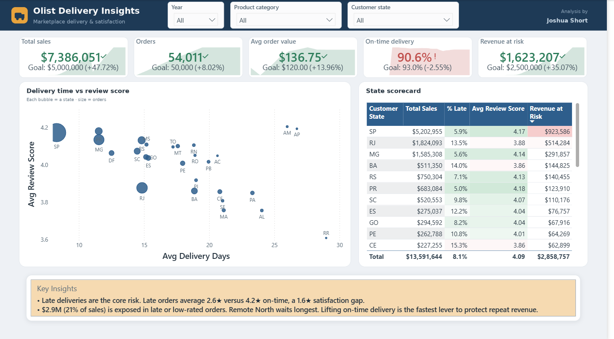

Portfolio · Power Platform & Power BI
Joshua Short
Power Platform & Power BI Developer
I build dashboards and semantic models that leaders run the business on, plus the automations and low-code apps that feed them. I'm based in Sacramento, California, and open to remote work across the US.

Invoice exceptions: a full-stack Power Platform design
A solution sketch for a common finance scenario: invoices come in above estimate and the reasons don't get captured. The design covers a canvas app, an embedded Power BI hub, a Teams approval flow, and a Copilot Studio agent, all on one Dataverse model.
View the project →
O-list delivery insights: Power BI report as code
A Power BI executive dashboard and case study built on the Olist Brazilian e-commerce dataset, showing where late deliveries put revenue at risk. The semantic model and report are authored as code, in TMDL and PBIR, inside a Power BI project.
View the project →